2.8 Planet Cute图像
| (require 2htdp/planetcute) | package： htdp-lib |
2htdp/planetcute库包含了Daniel Cook (Lostgarden.com)的Planet Cute艺术。
这些图像被设计成能彼此重叠的，可以用于构建游戏的场景。 下面是Planet Cute网站上的示例图片。
; stack : non-empty-list-of-images -> image ; 将'imgs'堆叠起来，彼此相隔40个像素 (define (stack imgs) (cond [(empty? (rest imgs)) (first imgs)] [else (overlay/xy (first imgs) 0 40 (stack (rest imgs)))]))
> (beside/align "bottom" (stack (list wall-block-tall stone-block)) (stack (list character-cat-girl stone-block stone-block stone-block stone-block)) water-block (stack (list grass-block dirt-block)) (stack (list grass-block dirt-block dirt-block))) 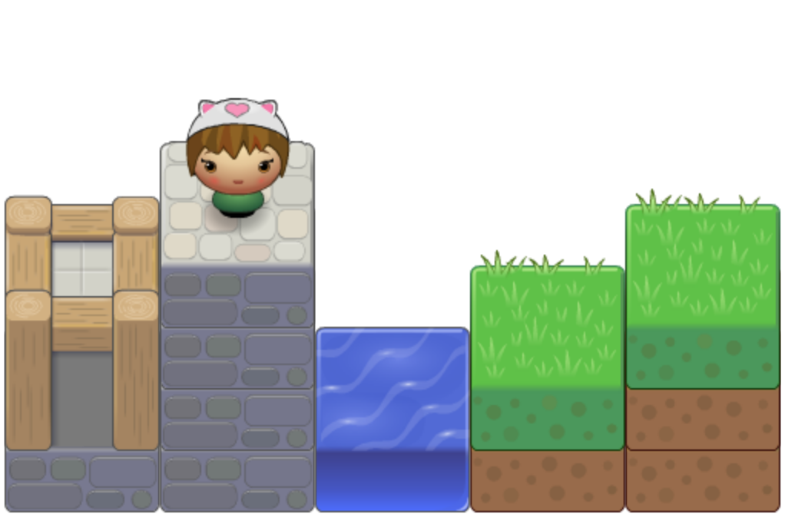
Planet Cute图像还包含一些阴影，可以用来改善游戏的外观； 关于如何使用它们的概述，请参阅阴影部分。
2.8.1 人物

2.8.2 方块

值
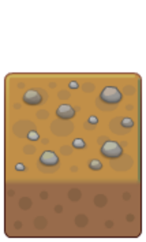
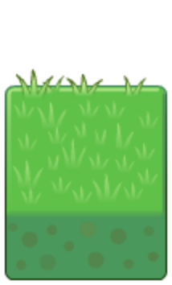
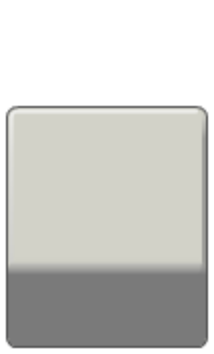
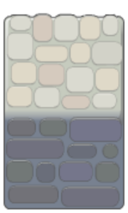
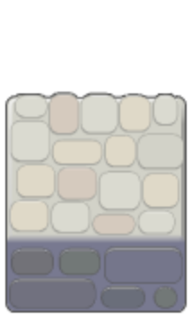
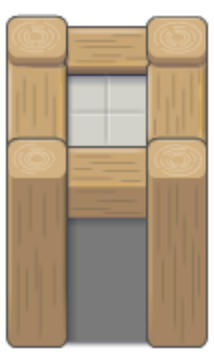
值
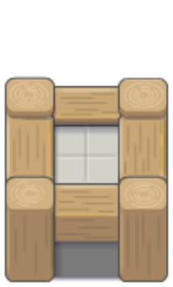
值
2.8.3 物品
值
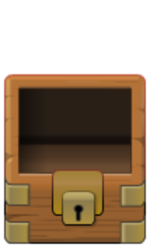
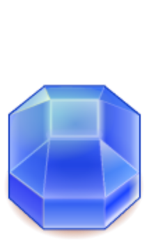
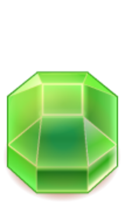
值
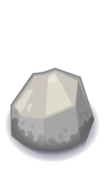
值
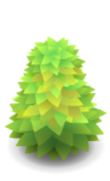
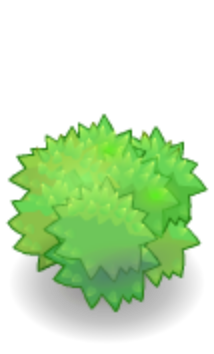
2.8.4 斜坡
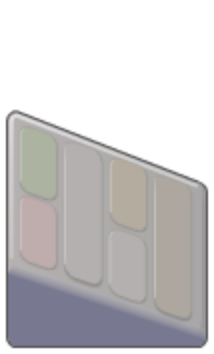
值
值
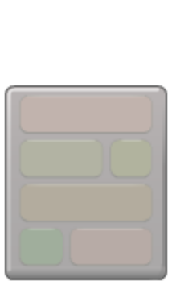
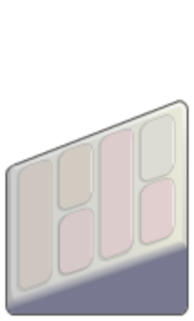
2.8.5 房屋
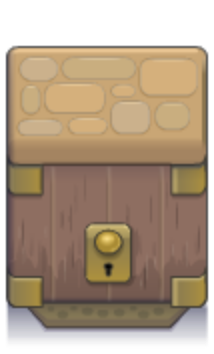
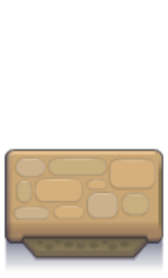
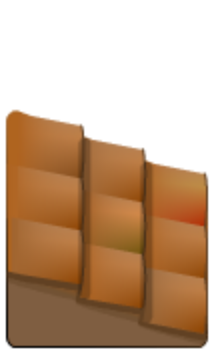
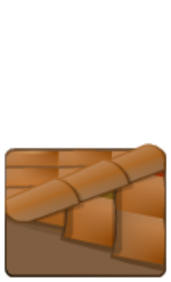
值
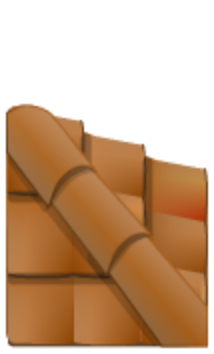
值
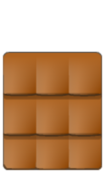
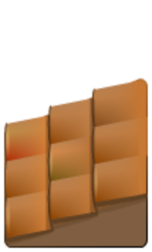
2.8.6 阴影
阴影图像的目的是，当其他方块按这里所描述的排列时，叠加到它们之上。
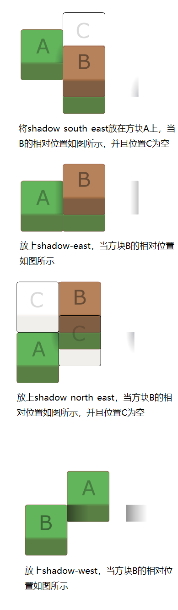
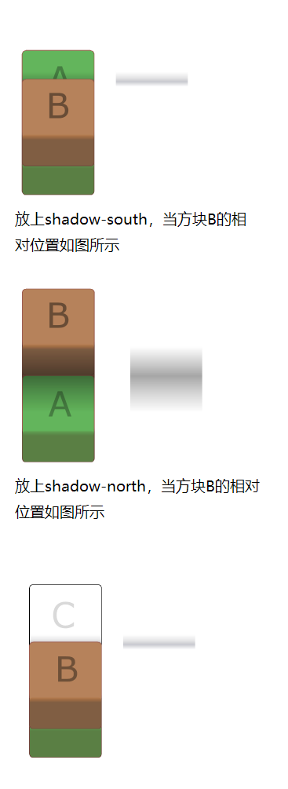
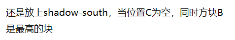
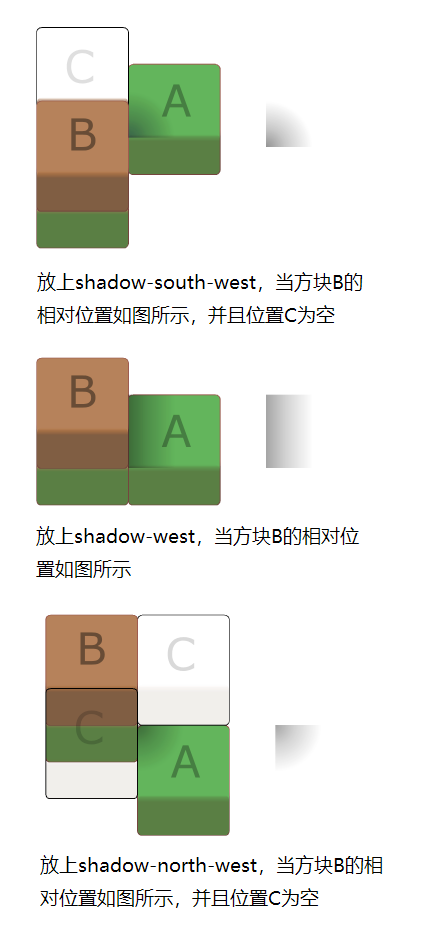

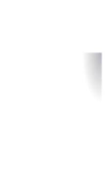
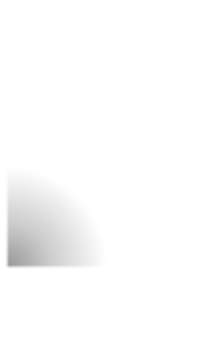